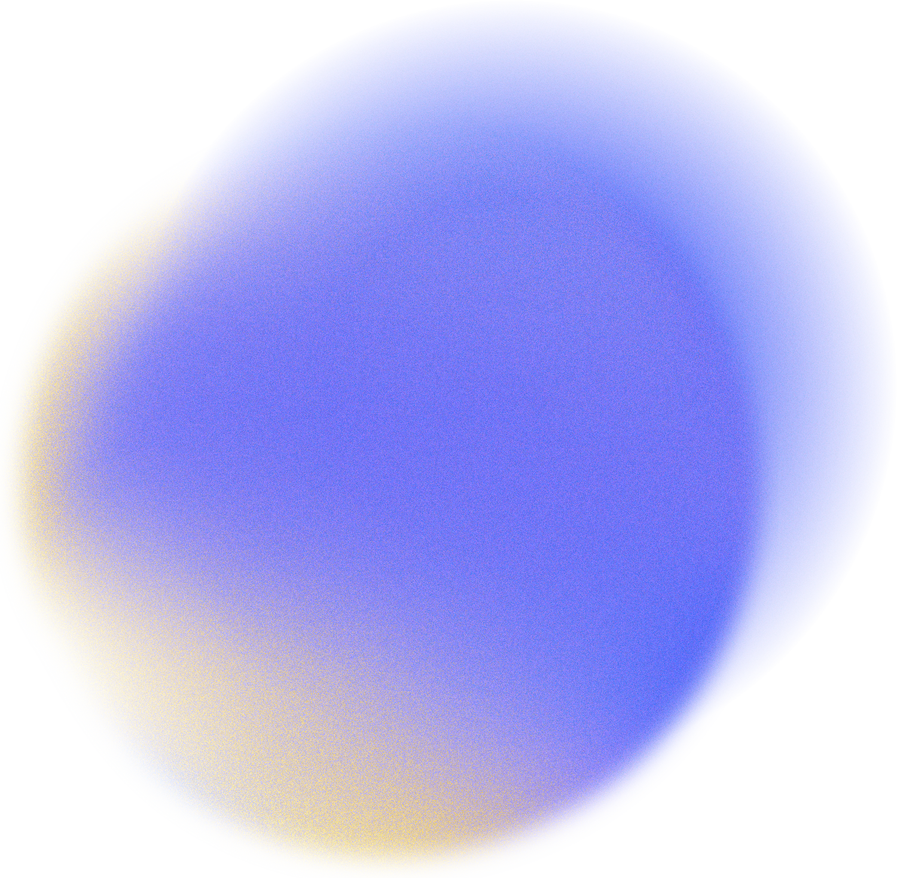
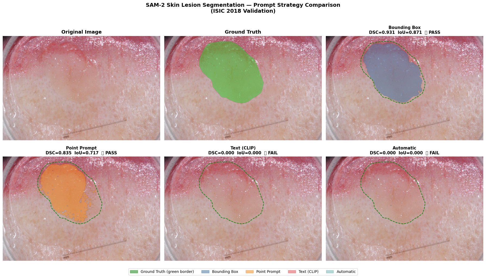
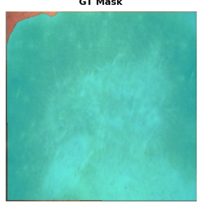
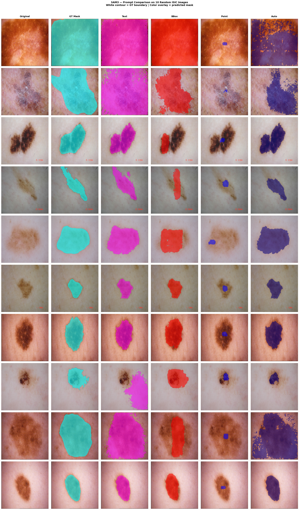
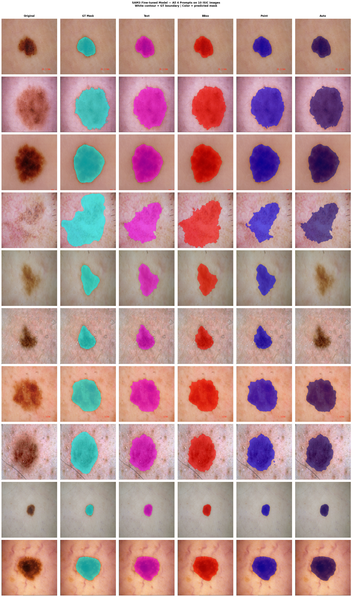
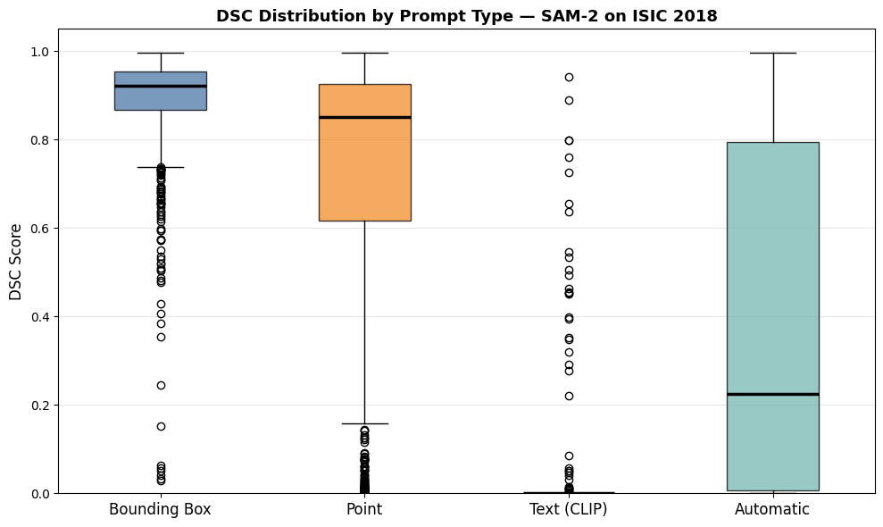
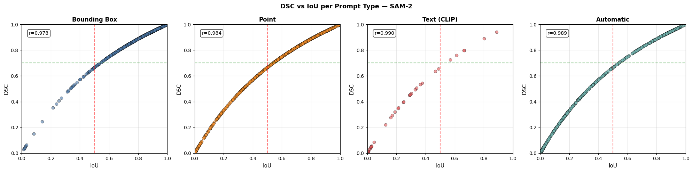
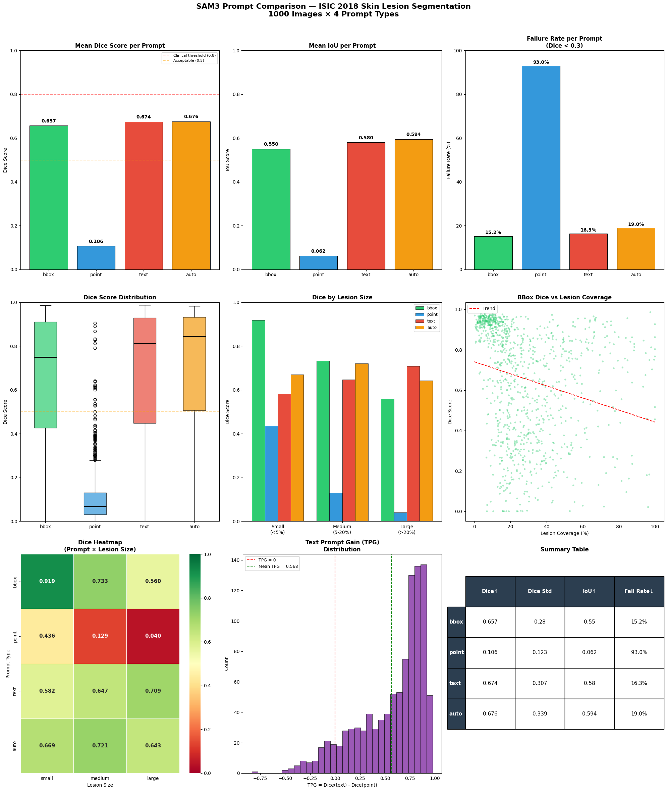
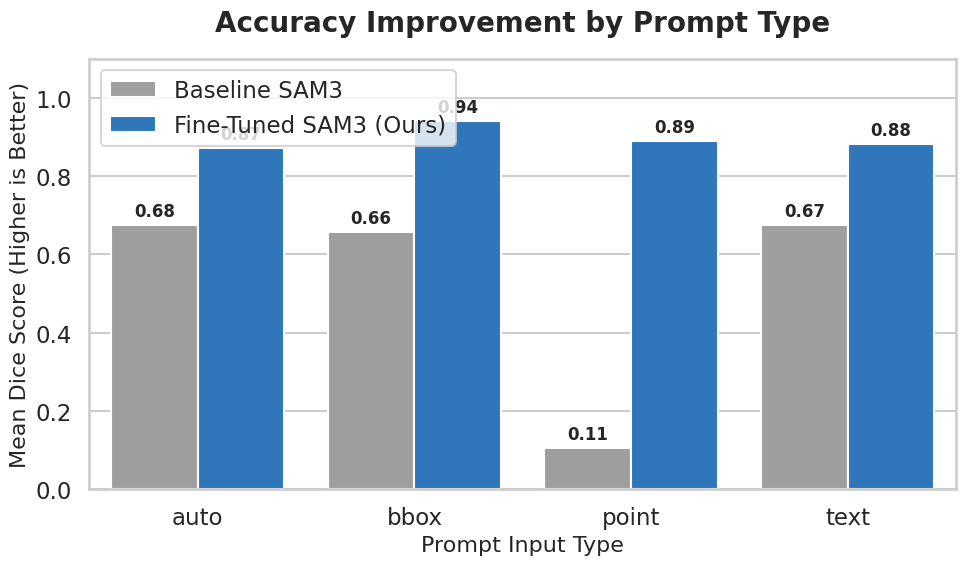
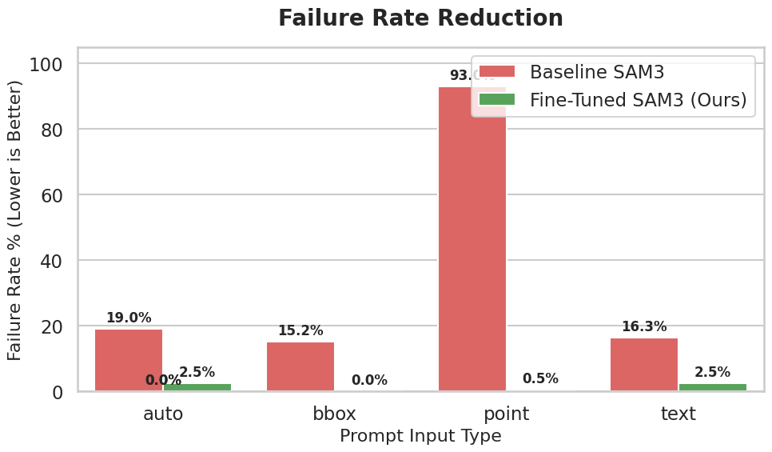

Objective
Evaluate how different prompts (bbox, point, text, auto) affect segmentation quality, and test whether fine-tuning SAM3 improves reliability on medical images.

Computer Vision - Medical Image Segmentation
A practical report on prompt-based lesion segmentation using ISIC-style dermoscopy images, with quantitative evaluation (Dice, IoU, Failure Rate) and visual analysis.
Evaluate how different prompts (bbox, point, text, auto) affect segmentation quality, and test whether fine-tuning SAM3 improves reliability on medical images.
SAM2.ipynb - baseline SAM2 benchmark with multiple prompt types.SAM3.ipynb - SAM3 zero-shot evaluation pipeline.SAM3Fine_tuned.ipynb - fine-tuning and post-training evaluation.Metrics were extracted directly from notebook outputs in this workspace.
SAM2 Best Prompt
BBox Dice 0.8882
SAM2 Text Prompt Gain (TPG)
-0.8750
SAM3 Zero-Shot Best Prompt
BBox Dice 0.6885
SAM3 Zero-Shot TPG
-0.3147
Fine-Tuned SAM3 Best Prompt
BBox Dice 0.9417
Fine-Tuned TPG
-0.0078
Animated summary of model behavior across baseline, zero-shot, and fine-tuned settings.
Best Dice Score
0.0000
Failure Reduction
0.0
Training Set Size
0
BBox
Dice 0.9417
Point
Dice 0.8910
Text
Dice 0.8832
Auto
Dice 0.8719
ISIC-style lesion images and masks are loaded from Colab/Drive paths, resized to model input resolution, then converted to binary masks for scoring.
Each image is evaluated via text, bounding-box, point, and automatic prompting. Outputs are converted to binary masks and compared against ground truth.
Dice and IoU measure overlap quality. Failure rate is computed using IoU < 0.5. TPG compares text prompt Dice relative to baseline prompting.
Dermoscopic image-mask pairs are loaded and converted into a consistent binary segmentation format. Masks are thresholded and spatially aligned with model outputs. For SAM3 experiments, inputs are standardized to 1024x1024 resolution to match model expectations, then mapped back to original dimensions for metric computation.
To analyze robustness by lesion scale, each sample is assigned a size bucket using lesion coverage ratio (foreground pixels / total pixels): small (< 5%), medium (5-20%), and large (>= 20%).
Four prompting modes are evaluated per image: bounding box, point, text, and automatic. This isolates prompt sensitivity and allows fair comparison of semantic vs geometric guidance.
For each prompt type, the best-scoring predicted mask candidate is selected from model outputs and post-processed to binary form before scoring against ground truth.
Let P be predicted foreground pixels and G be ground-truth foreground pixels:
Dice: 2|P ∩ G| / (|P| + |G|)
IoU: |P ∩ G| / |P ∪ G|
Failure Rate: proportion of cases below thresholded quality criterion used in the notebook pipeline.
TPG: mean Dice(text) - Dice(reference prompt), indicating text prompt gain/loss.
These metrics jointly capture overlap quality, boundary consistency, and reliability across images.
Fine-tuning uses AdamW optimization, a composite segmentation objective (Dice + BCE), and validation-driven checkpointing. The run shown in notebook outputs trains for 15 epochs on 800 training images, and stores the best model based on validation Dice.
This protocol is designed to improve domain adaptation for lesion boundaries while preserving prompt flexibility. Final evaluation is reported on held-out test data using the same prompt-specific pipeline as baseline experiments.
SAM2 performs strongly with bbox prompts (Dice 0.8882), but text prompting is not reliable for domain-specific medical boundaries.
Zero-shot SAM3 shows weaker segmentation stability and high failure for text prompts, indicating need for domain adaptation.
Fine-tuning substantially lifts all prompts, with bbox Dice reaching 0.9417 and near-zero failure, and text prompt gap becoming minimal.









Fine-tuning SAM3 on lesion data materially improves segmentation quality and consistency. The biggest gains are seen in failure reduction and prompt robustness, making the model more suitable for medical-image workflows where stable boundaries matter more than single-image wins.